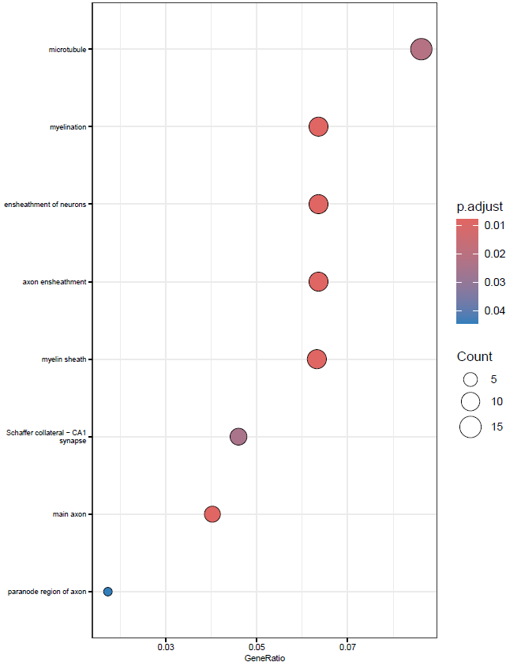
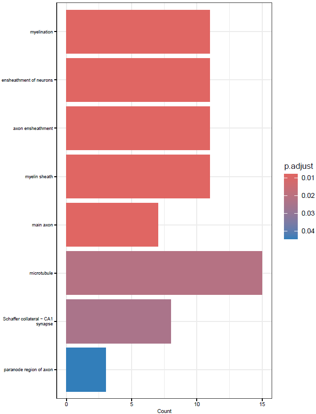
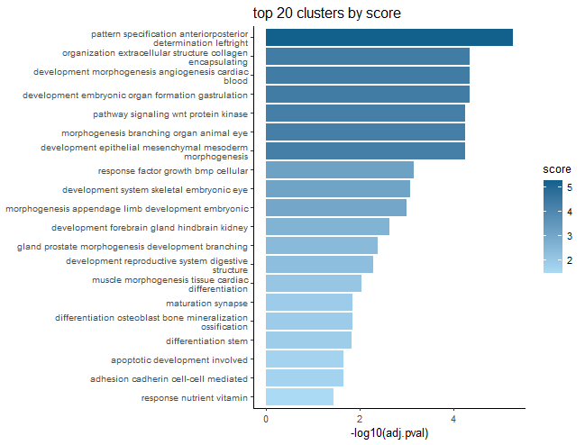
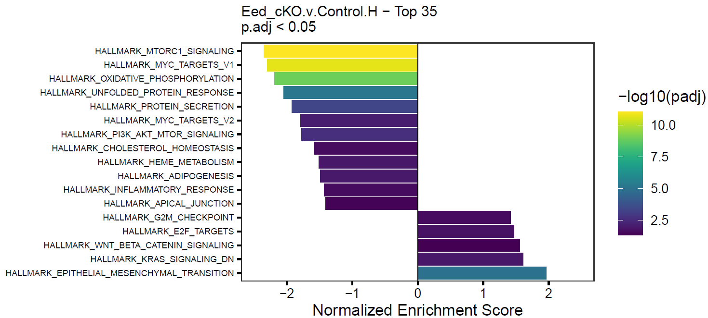
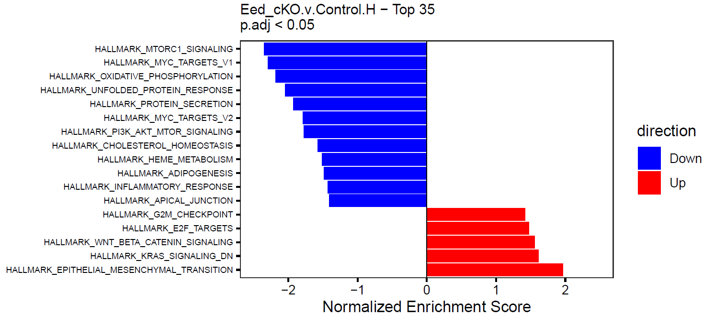

halfBaked - RNA-seq - edgeR Differential Expression
Jared Andrews
St. Jude Children’s Research Hospitaljared.andrews07@gmail.com
2 May 2025
Source:vignettes/ii_b.RNAseq_edgeR_Template.Rmd
ii_b.RNAseq_edgeR_Template.RmdIntroduction
This is an example template for running a typical differential expression analysis using edgeR via halfBaked. It is meant to be a starting point for your own analysis and is not a comprehensive guide to all the options available in edgeR or halfBaked.
Load the Pin (or SummarizedExperiment)
This vignette assumes that you have already created a pin with the
halfBaked package (see
vignette("halfBaked Pin Generation Template")) that you
want to load or that you have a SummarizedExperiment object
that you want to use.
If you already have a SummarizedExperiment object, you
can skip this step and load it directly.
Dataset Description
If stored in the SummarizedExperiment, we can show the
experiment description directly.
Wang J. et al SciAdv 2020 - GSE135880 - Mouse OPCs with Eed KO - RNA-seq Data
This dataset contains O4+ immunopanned oligodendrocyte precursor cells (OPCs) from cortices of P5 or P6 Eed KO or control mice. See the associated publication for more details.
Please see the Pin generation code to view how this data was processed.
Run Differential Expression via edgeR
See halfBaked::get_edgeR_res() for more details on the
parameters.
# To hold the results for each comparison.
res <- list()
# Whatever can be used as name of contrast vectors.
contrasts <- list(
"Eed_cKO.v.Control" = c("Group", "Eed_cKO", "Control")
)
res <- get_edgeR_res(se,
res.list = res, contrasts = contrasts,
)
# Cram DE results into SE metadata.
se.meta <- metadata(se)
se.meta$edgeR.Results <- res
metadata(se) <- se.meta
# Save all results to file if wanted.
dir.create("./de", showWarnings = FALSE)
write.xlsx(res, file = "./de/All.Comparisons.DEGs.edgeR.xlsx", overwrite = TRUE)Enrichment/Over-representation Analyses
Hypergeometric enrichment analyses are pretty standard after
differential expression. We use the run_enrichment()
function to make these more convenient to run. This function largely
uses the clusterProfiler
package.
# Set species and database stuff for enrichments
if (params$species %in% c("human", "mouse")) {
if (params$species == "human") {
orgdb <- "org.Hs.eg.db"
msig.species <- "Homo sapiens"
} else {
orgdb <- "org.Mm.eg.db"
msig.species <- "Mus musculus"
}
} else {
stop("species parameter must be 'human' or 'mouse'")
}
# Edit if you'd like, don't recommend post-hoc LFC thresholding
sig_th <- 0.05
lfc_th <- 0
sig_col <- "FDR"
lfc_col <- "logFC"
kegg_res <- list()
rct_res <- list()
go_res <- list()
for (rez in names(res)) {
df <- res[[rez]]$table
bg <- df$ENSEMBL[!is.na(df[[sig_col]])]
up_genes <- df$ENSEMBL[!is.na(df[[sig_col]]) &
df[[sig_col]] < sig_th &
df[[lfc_col]] > lfc_th]
dn_genes <- df$ENSEMBL[!is.na(df[[sig_col]]) &
df[[sig_col]] < sig_th &
df[[lfc_col]] < -lfc_th]
if (length(up_genes) > 0) {
kegg_res <- run_enrichment(up_genes, bg,
res.name = paste0(rez, "_up"),
res.list = kegg_res, OrgDb = orgdb,
method = "KEGG", species = params$species
)
rct_res <- run_enrichment(up_genes, bg,
res.name = paste0(rez, "_up"),
res.list = rct_res, OrgDb = orgdb,
method = "Reactome", species = params$species
)
go_res <- run_enrichment(up_genes, bg,
res.name = paste0(rez, "_up"),
res.list = go_res, OrgDb = orgdb,
method = "GO", species = params$species
)
}
if (length(dn_genes) > 0) {
kegg_res <- run_enrichment(dn_genes, bg,
res.name = paste0(rez, "_dn"),
res.list = kegg_res, OrgDb = orgdb,
method = "KEGG", species = params$species
)
rct_res <- run_enrichment(dn_genes, bg,
res.name = paste0(rez, "_dn"),
res.list = rct_res, OrgDb = orgdb,
method = "Reactome", species = params$species
)
go_res <- run_enrichment(dn_genes, bg,
res.name = paste0(rez, "_dn"),
res.list = go_res, OrgDb = orgdb,
method = "GO", species = params$species
)
}
}
full_res <- c(kegg_res, rct_res, go_res)Create Summary Table
Individual files are for the birds, I hate making supplemental tables.
dir.create("./enrichments_edgeR", showWarnings = FALSE)
# Excel sheets can only be 31 characters, so it is necessary to shorten the names
names(full_res) <- gsub("Reactome", "RCT", names(full_res))
names(full_res) <- gsub("Control", "Ctl", names(full_res))
names(full_res) <- gsub("\\.v\\.", "v", names(full_res))
write.xlsx(full_res, file = "./enrichments/allresults.xlsx", overwrite = TRUE)
# Save to SE object.
metadata(se)$edgeR.enrichments <- full_resBasic Visualization
A picture’s worth 10000 words of AI-generated slop.
my_theme <- theme(
axis.text.y = element_text(size = 6, color = "black"),
axis.text.x = element_text(color = "black"),
axis.ticks = element_line(color = "black")
)
# Basic bar and dotplots for arbitrary top X enriched gene sets
for (comp in names(full_res)) {
enr <- full_res[[comp]]
message(comp)
pdf(paste0("./enrichments_edgeR/", comp, "_Enrichments.Top30.pdf"),
width = 6, height = 8
)
print(dotplot(enr, showCategory = 30, font.size = 7) + my_theme)
print(dotplot(enr, size = "Count", showCategory = 30, font.size = 7) + my_theme)
print(barplot(enr, showCategory = 30, font.size = 7) + my_theme)
dev.off()
# This collapses redundant GO terms into a single term based on similarity.
# The set with the lowest p-value in each cluster is used as the label.
if (grepl("GO", comp)) {
enr <- simplify(enr)
pdf(paste0("./enrichments_edgeR/", comp, "_collapsedEnrichments.Top30.pdf"),
width = 6, height = 8
)
print(dotplot(enr, showCategory = 30, font.size = 7) + my_theme)
print(dotplot(enr, size = "Count", showCategory = 30, font.size = 7) + my_theme)
print(barplot(enr, showCategory = 30, font.size = 7) + my_theme)
dev.off()
}
}This will create simple dot and barplots like so:


Clustering GO Terms
GO terms can be very redundant, which makes coming through the results and summarizing them a headache. One solution to this is to cluster terms with a high degree of overlap and then summarize the cluster.
onts <- c("BP", "CC", "MF")
up.col <- "#56B4E9"
gobp_res <- grep("GOBP", names(full_res))
gomf_res <- grep("GOMF", names(full_res))
gocc_res <- grep("GOCC", names(full_res))
clustered_res_size <- list()
clustered_res_uniqueness <- list()
clustered_res_log10_padjscore <- list()
for (ont in onts) {
# Get the GO terms for the current ontology
if (ont == "BP") {
curr_go <- gobp_res
} else if (ont == "CC") {
curr_go <- gocc_res
} else {
curr_go <- gomf_res
}
godat <- GOSemSim::godata(orgdb, ont = ont)
# Ignore these words, alter as wanted
stoppers <- tm::stopwords(kind = "en")
stoppers <- c(
stoppers, "regulation", "positive",
"negative", "process", "cell", "activity"
)
for (i in names(full_res)[curr_go]) {
enr.up <- full_res[[i]]
# Collapse similar terms, score by term size, uniqueness, or significance
if (!is.null(enr.up)) {
if (nrow(enr.up) > 2) {
dir.create(file.path("enrichments_edgeR", "reduced"),
recursive = TRUE, showWarnings = FALSE
)
enr.up.sim <- calculateSimMatrix(enr.up$ID,
orgdb = orgdb,
ont = ont,
semdata = godat,
method = "Rel"
)
enr.up.scores <- -log10(enr.up$p.adjust)
names(enr.up.scores) <- enr.up$ID
enr.up.red.size <- reduceSimMatrix(enr.up.sim,
scores = "size",
threshold = 0.7, orgdb = orgdb
)
enr.up.red.unique <- reduceSimMatrix(enr.up.sim,
scores = "uniqueness",
threshold = 0.7, orgdb = orgdb
)
enr.up.red.score <- reduceSimMatrix(enr.up.sim,
scores = enr.up.scores,
threshold = 0.7, orgdb = orgdb
)
clustered_res_size[[i]] <- enr.up.red.size
clustered_res_uniqueness[[i]] <- enr.up.red.unique
clustered_res_log10_padjscore[[i]] <- enr.up.red.score
write.table(enr.up.red.size,
file = file.path(
"./enrichments_edgeR/reduced",
paste0(i, ".termsim.Reduced.size.0.7.txt")
),
sep = "\t",
row.names = FALSE, quote = FALSE
)
write.table(enr.up.red.unique,
file = file.path(
"./enrichments_edgeR/reduced",
paste0(i, ".termsim.Reduced.uniqueness.0.7.txt")
),
sep = "\t",
row.names = FALSE, quote = FALSE
)
write.table(enr.up.red.score,
file = file.path(
"./enrichments_edgeR/reduced",
paste0(i, ".termsim.Reduced.log10_padjscore.0.7.txt")
),
sep = "\t",
row.names = FALSE, quote = FALSE
)
pdf(
file.path(
"./enrichments_edgeR/reduced",
paste0(i, ".barplot.termsim.Reduced.size.0.7.pdf")
),
width = 5, height = 6
)
p <- plot_clustered_terms_top(enr.up.red.size,
color = up.col,
n.top.terms = 5, xlabel = "term size", stoppers = stoppers
)
print(p)
p <- plot_clustered_terms_top(enr.up.red.size,
color = up.col,
n.top.terms = 5, n.top.clusters = 20,
xlabel = "term size", stoppers = stoppers
) +
ggtitle("top 20 clusters by score")
print(p)
dev.off()
pdf(
file.path(
"./enrichments_edgeR/reduced",
paste0(i, ".barplot.termsim.Reduced.uniqueness.0.7.pdf")
),
width = 5, height = 6
)
p <- plot_clustered_terms_top(enr.up.red.unique,
color = up.col,
n.top.terms = 5, xlabel = "uniqueness", stoppers = stoppers
)
print(p)
p <- plot_clustered_terms_top(enr.up.red.unique,
color = up.col,
n.top.terms = 5, n.top.clusters = 20,
xlabel = "uniqueness", stoppers = stoppers
) +
ggtitle("top 20 clusters by score")
print(p)
dev.off()
pdf(
file.path(
"./enrichments_edgeR/reduced",
paste0(i, ".barplot.termsim.Reduced.log10padj_scores.0.7.pdf")
),
width = 5, height = 6
)
p <- plot_clustered_terms_top(enr.up.red.score,
color = up.col,
n.top.terms = 5, xlabel = "-log10(adj.pval)", stoppers = stoppers
)
print(p)
p <- plot_clustered_terms_top(enr.up.red.score,
color = up.col,
n.top.terms = 5, n.top.clusters = 20,
xlabel = "-log10(adj.pval)", stoppers = stoppers
) +
ggtitle("top 20 clusters by score")
print(p)
dev.off()
}
}
}
}
# Again, tack onto SE
metadata(se)$edgeR.clustered_GO_enrichment <- list(
size = clustered_res_size,
uniqueness = clustered_res_uniqueness,
log10_padjscore = clustered_res_log10_padjscore
)This will spit out barplots with the most frequent terms for each cluster as labels and the largest term size, uniqueness, or highest -log10(p-value) of a term as the representative score of the cluster.
The p-value scoring likely makes the most sense.
These plots are good for condensing many GO terms into clusters that can be meaningfully interpreted in a broad sense.

GSEA
Gene set enrichment analysis (GSEA) is another pretty typical follow-up to differential expression analyses.
Load Gene Sets
Our gene sets just need to be in a named list, where the name of each element corresponds to the gene set identifier and the element itself is just a vector of gene identifiers.
The MSigDB
database is a very popular source of gene sets, as it contains numerous
collections. We can use the msigdbr package for simple
access to these gene sets.
In this case, we show how to create a nested list of lists, where the first level is the gene set collection/subcollection, and the second level are the named vectors with the actual gene set name and members.
# Set categories and subcategories that we want to retrieve, see msigdbr_collections()
# These vectors must be of equal length.
cats <- c("H", "C2", "C2", "C2", "C3", "C5", "C5", "C5", "C5", "C8")
subcats <- c(
"", "CGP", "CP:KEGG", "CP:REACTOME", "TFT:GTRD",
"GO:MF", "GO:BP", "GO:CC", "HPO", ""
)
msig_lists <- list()
# Get gene sets for each category and subcategory and stick in the msig.lists
for (i in seq_along(cats)) {
cat <- cats[i]
subcat <- subcats[i]
msig <- msigdbr(species = msig.species, category = cat, subcategory = subcat)
# Split into a named list
msig_ls <- msig %>% split(x = .$gene_symbol, f = .$gs_name)
# Stick in the list
if (subcat == "") {
outname <- cat
} else {
outname <- paste0(cat, "_", subcat)
}
msig_lists[[outname]] <- msig_ls
}
# We could also use custom gene sets, perhaps stored in a pin
# Potentially as nested lists for easier selection.
# board <- board_connect(server = params$board)
# gs <- pin_read(board, gs.pin)Create Ranked Gene Lists
GSEA requires a ranked list of genes, so we will use the test statistic, as it is signed and correlates with both significance and effect size. The edgeR authors recommend using the p-value for ranking.
# Add as many comparisons as wanted here.
# Should match values in `names(dds.meta$DE.Results)`.
dges <- c("Eed_cKO.v.Control")
ranked_lists <- list()
for (d in dges) {
out.res <- dds.meta$edgeR.Results[[d]]
gsea.df <- out.res[!(is.na(out.res$padj)), ]
gsea.df.gsea <- gsea.df$stat
names(gsea.df.gsea) <- make.names(gsea.df$SYMBOL, unique = TRUE)
ranked_lists[[d]] <- gsea.df.gsea
}Run GSEA
Now we’re ready to perform GSEA for each of the ranked gene sets.
We’ll also loop through the gene collections to run on each individually.
See run_GSEA() for full parameters.
res_list <- list()
for (i in seq_along(ranked_lists)) {
ranked_genes <- ranked_lists[[i]]
ranked_name <- names(ranked_lists)[i]
message(paste0("Running pre-ranked GSEA for: ", ranked_name))
# Loop through the gene collections
for (j in seq_along(msig_lists)) {
msig_ls <- msig_lists[[j]]
msig_name <- names(msig_lists)[j]
# Remove the colon or it'll break file paths
msig_name <- gsub(":", "_", msig_name)
message(paste0("Using collection: ", msig_name))
# Run GSEA
res_list <- run_GSEA(msig_ls, ranked_genes,
outdir = "./GSEA/", res.name = paste0(ranked_name, ".", msig_name),
res.list = res_list
)
}
}
# Excel sheets can only be 31 chars, so it is often necessary to shorten the names
names(res_list) <- gsub("REACTOME", "RCT", names(res_list))
# Add to metadata of the SummarizedExperiment object
metadata(se)$DESeq2.GSEA <- res_listCreate Summary Table
The run_GSEA function generates a ton of output
depending on how many ranked lists are used. Ultimately, it’s pretty
nice to have that all in a single file for easy sharing/perusal, so
we’ll write each results table to a worksheet of an excel file.
write.xlsx(res_list, file = "./GSEA/MSigDB.allresults.xlsx", overwrite = TRUE)
saveRDS(res_list, file = "./GSEA/MSigDB.allresults.RDS")Create Summary Figures
GSEA returns a lot of output and can be hard to summarize, so this is an attempt to make the results more compact by chucking the top X significant gene sets into a single figure.
We can do this for each element in our GSEA results list. See
GSEA_barplot() for full parameters.
for (res in names(res_list)) {
message(paste0("Plotting GSEA results for: ", res))
p <- GSEA_barplot(
gsea.res = res_list[[res]], genesets.name = res,
padj.th = 0.05, top = 35
)
# Can also color by direction rather than adj. p
p2 <- GSEA_barplot(
gsea.res = res_list[[res]], genesets.name = res,
padj.th = 0.05, top = 35, color.by.direction = TRUE
)
# Dynamic height adjustment
h <- 2 + (0.07 * nrow(p$data))
pdf(paste0("./GSEA/", res, ".GSEA_barplot.pdf"), height = h, width = 7)
print(p)
print(p2)
dev.off()
}This will create simple barplots like so:


Write Pin
The pin can now be saved with the new DE, enrichment,
and GSEA data included.
# Write the pin with the new data
board <- board_connect(server = params$board)
pin_write(board, se,
type = "rds", name = params$pin_name, title = params$pin_name,
description = params$pin_description
)
# Can save the object locally if wanted as well.
saveRDS(se, file = paste0("./", params$pin_name, ".RDS"))SessionInfo
Click to expand
## R version 4.5.0 (2025-04-11)
## Platform: x86_64-pc-linux-gnu
## Running under: Ubuntu 24.04.2 LTS
##
## Matrix products: default
## BLAS: /usr/lib/x86_64-linux-gnu/openblas-pthread/libblas.so.3
## LAPACK: /usr/lib/x86_64-linux-gnu/openblas-pthread/libopenblasp-r0.3.26.so; LAPACK version 3.12.0
##
## locale:
## [1] LC_CTYPE=C.UTF-8 LC_NUMERIC=C LC_TIME=C.UTF-8
## [4] LC_COLLATE=C.UTF-8 LC_MONETARY=C.UTF-8 LC_MESSAGES=C.UTF-8
## [7] LC_PAPER=C.UTF-8 LC_NAME=C LC_ADDRESS=C
## [10] LC_TELEPHONE=C LC_MEASUREMENT=C.UTF-8 LC_IDENTIFICATION=C
##
## time zone: UTC
## tzcode source: system (glibc)
##
## attached base packages:
## [1] stats4 stats graphics grDevices utils datasets methods
## [8] base
##
## other attached packages:
## [1] rrvgo_1.20.0 BiocParallel_1.42.0
## [3] msigdbr_10.0.2 openxlsx_4.2.8
## [5] pins_1.4.1 SummarizedExperiment_1.38.1
## [7] Biobase_2.68.0 GenomicRanges_1.60.0
## [9] GenomeInfoDb_1.44.0 IRanges_2.42.0
## [11] S4Vectors_0.46.0 BiocGenerics_0.54.0
## [13] generics_0.1.3 MatrixGenerics_1.20.0
## [15] matrixStats_1.5.0 halfBaked_0.99.0.9000
## [17] BiocStyle_2.36.0
##
## loaded via a namespace (and not attached):
## [1] splines_4.5.0 later_1.4.2
## [3] ggplotify_0.1.2 tibble_3.2.1
## [5] R.oo_1.27.0 polyclip_1.10-7
## [7] graph_1.86.0 lifecycle_1.0.4
## [9] edgeR_4.6.1 NLP_0.3-2
## [11] lattice_0.22-6 MASS_7.3-65
## [13] SnowballC_0.7.1 magrittr_2.0.3
## [15] limma_3.64.0 sass_0.4.10
## [17] rmarkdown_2.29 jquerylib_0.1.4
## [19] yaml_2.3.10 httpuv_1.6.16
## [21] ggtangle_0.0.6 askpass_1.2.1
## [23] zip_2.3.2 reticulate_1.42.0
## [25] cowplot_1.1.3 DBI_1.2.3
## [27] RColorBrewer_1.1-3 abind_1.4-8
## [29] purrr_1.0.4 R.utils_2.13.0
## [31] ggraph_2.2.1 yulab.utils_0.2.0
## [33] tweenr_2.0.3 rappdirs_0.3.3
## [35] GenomeInfoDbData_1.2.14 enrichplot_1.28.1
## [37] tm_0.7-16 ggrepel_0.9.6
## [39] tokenizers_0.3.0 tidytree_0.4.6
## [41] reactome.db_1.92.0 pheatmap_1.0.12
## [43] umap_0.2.10.0 RSpectra_0.16-2
## [45] pkgdown_2.1.2 codetools_0.2-20
## [47] DelayedArray_0.34.1 DOSE_4.2.0
## [49] xml2_1.3.8 ggforce_0.4.2
## [51] tidyselect_1.2.1 aplot_0.2.5
## [53] UCSC.utils_1.4.0 farver_2.1.2
## [55] viridis_0.6.5 jsonlite_2.0.0
## [57] tidygraph_1.3.1 ggridges_0.5.6
## [59] systemfonts_1.2.3 tools_4.5.0
## [61] treeio_1.32.0 ragg_1.4.0
## [63] Rcpp_1.0.14 glue_1.8.0
## [65] gridExtra_2.3 SparseArray_1.8.0
## [67] xfun_0.52 DESeq2_1.48.0
## [69] qvalue_2.40.0 dplyr_1.1.4
## [71] withr_3.0.2 BiocManager_1.30.25
## [73] fastmap_1.2.0 openssl_2.3.2
## [75] digest_0.6.37 R6_2.6.1
## [77] mime_0.13 gridGraphics_0.5-1
## [79] textshaping_1.0.1 colorspace_2.1-1
## [81] GO.db_3.21.0 RSQLite_2.3.9
## [83] R.methodsS3_1.8.2 tidyr_1.3.1
## [85] data.table_1.17.0 graphlayouts_1.2.2
## [87] httr_1.4.7 S4Arrays_1.8.0
## [89] graphite_1.54.0 pkgconfig_2.0.3
## [91] gtable_0.3.6 blob_1.2.4
## [93] SingleCellExperiment_1.30.0 XVector_0.48.0
## [95] clusterProfiler_4.16.0 janeaustenr_1.0.0
## [97] htmltools_0.5.8.1 bookdown_0.43
## [99] fgsea_1.34.0 scales_1.4.0
## [101] png_0.1-8 wordcloud_2.6
## [103] ggfun_0.1.8 knitr_1.50
## [105] reshape2_1.4.4 curl_6.2.2
## [107] nlme_3.1-168 cachem_1.1.0
## [109] stringr_1.5.1 parallel_4.5.0
## [111] AnnotationDbi_1.70.0 treemap_2.4-4
## [113] desc_1.4.3 ReactomePA_1.52.0
## [115] pillar_1.10.2 grid_4.5.0
## [117] vctrs_0.6.5 slam_0.1-55
## [119] promises_1.3.2 dittoSeq_1.20.0
## [121] xtable_1.8-4 evaluate_1.0.3
## [123] cli_3.6.5 locfit_1.5-9.12
## [125] compiler_4.5.0 rlang_1.1.6
## [127] crayon_1.5.3 tidytext_0.4.2
## [129] plyr_1.8.9 fs_1.6.6
## [131] stringi_1.8.7 gridBase_0.4-7
## [133] viridisLite_0.4.2 assertthat_0.2.1
## [135] babelgene_22.9 Biostrings_2.76.0
## [137] lazyeval_0.2.2 GOSemSim_2.34.0
## [139] Matrix_1.7-3 patchwork_1.3.0
## [141] bit64_4.6.0-1 ggplot2_3.5.2
## [143] KEGGREST_1.48.0 statmod_1.5.0
## [145] shiny_1.10.0 igraph_2.1.4
## [147] memoise_2.0.1 bslib_0.9.0
## [149] ggtree_3.16.0 fastmatch_1.1-6
## [151] bit_4.6.0 ape_5.8-1
## [153] gson_0.1.0